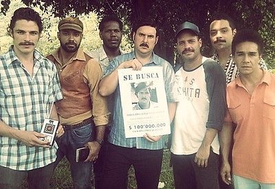

INFORMACIÓN HISTÓRICA

- La historia comienza entre el operativo que dio muerte a Pablo Escobar y los asesinatos de sus víctimas más destacadas, con escenas reales. Continúa desde sus orígenes como hijo de la profesora de un pueblo cercano a Medellín; se ve a un Pablo Escobar niño, al comienzo frágil, pero que luego desarrolla su faceta pícara bajo la tutela de una matrona antioqueña. Se muestra cómo, a medida que va creciendo, Pablo Escobar se va haciendo cada vez más ambicioso sin importar lo que cueste. Pasando por sus inicios como delincuente que robaba lápidas y se dedicaba al contrabando y, finalmente, envolviéndose en el mundo del narcotráfico, donde empieza la historia del hombre más rico en la historia de Colombia, pero también uno de los más peligrosos del mundo.
- Escobar, el patrón del mal es una historia basada en el libro La parábola de Pablo, del periodista y exalcalde de Medellín Alonso Salazar
- Basada en varios documentos periodísticos y testimonios reales, aunque también en relatos ficticios, según su productora general Juana Uribe, Su guionista esta a cargo de Juan Camilo Ferrand.
- Se estrenó el 28 de mayo de 2012 en un horario de las 9:00 p. m., con un índice de audiencia de 26,9 puntos y logrando, al finalizar el primer capítulo un pico de 79%, en total logró el 62,7% de cuota de audiencia promedio, lo que le convirtió en el estreno más visto en la historia de la televisión colombiana.
- Esta protagonizada por Andrés Parra quien interpreta a Pablo Escobar, Angie Cepeda quien interpreta a Regina Parejo, Nicolás Montero que interpreta al asesinado caudillo liberal Luis Carlos Galán, Ernesto Benjumea quien hace las veces del asesinado Ministro de Justicia Rodrigo Lara Bonilla, Diana Hoyos quien interpreta a Nancy Restrepo de Lara, Juan Carlos Arango quien interpreta a Gonzalo Rodríguez Gacha y Christian Tappan como Gustavo Gaviria, primo de Pablo Escobar y Joavany Álvarez como Jorge Luis Ochoa Vasquez jefe del clan de los hermanos Ochoa primordial socio de Escobar.
- Esta serie fue la apuesta más ambiciosa de Caracol Televisión para 2012 ya que contaba con más de 1300 actores, grabada 100% en exteriores en más de 500 locaciones de Colombia y Miami, Estados Unidos. La música corre por cuenta de Yuri Buenaventura.
fuente:https://es.wikipedia.org/wiki/Escobar,_el_patr%C3%B3n_del_mal#Sinopsis